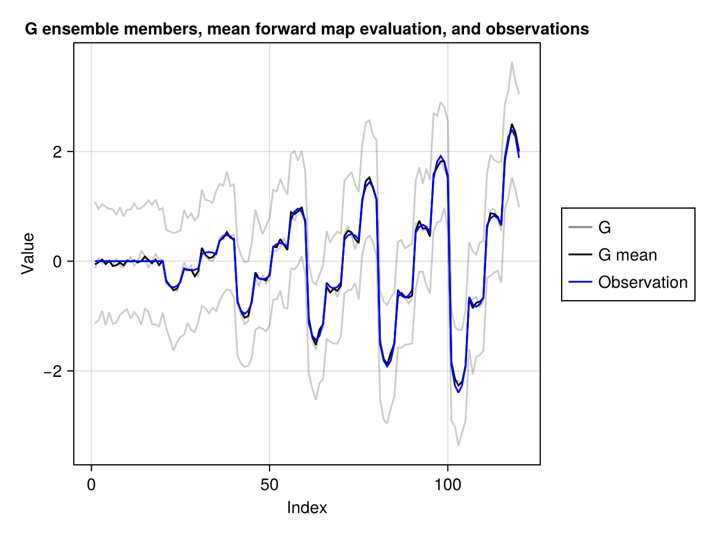
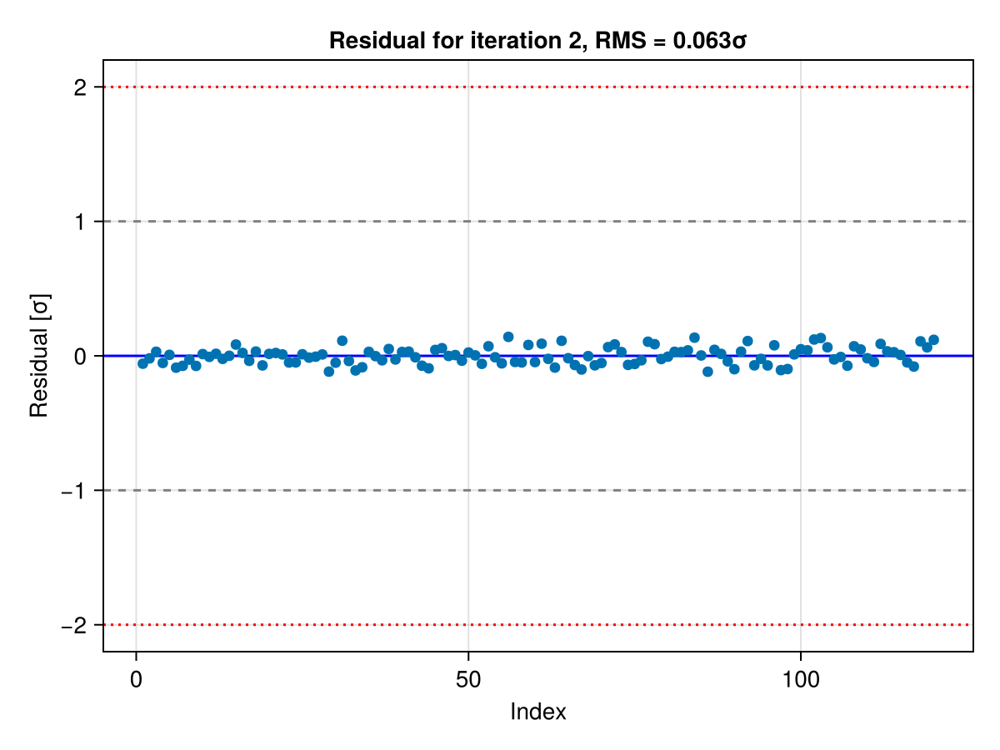

Visualization
ClimaCalibrate provides primitive plotting utilities for plotting the mean forward map evaluation, columns of the G ensemble matrix, and the true observation via a Makie extension.
Since the plotting utilities are general, they may be insufficient for your use case. The plotting functions do not use metadata in the EKP.EnsembleKalmanProcess object, since the metadata are specific to the calibration that you are conducting. Hence, if these plotting utilities are insufficient, you should use the metadata to transform the data in the EKP.EnsembleKalmanProcess object to data that is more suitable for plotting.
To plot the mean forward map evaluation, columns of the G ensemble matrix, the true observation, and the normalized residual, you can use Visualization.plot_g_mean, Visualization.plot_g, Visualization.plot_obs, and Visualization.plot_residual respectively. The mutating versions also exist as Visualization.plot_g_mean!, Visualization.plot_g!, Visualization.plot_obs!, and Visualization.plot_residual!. All plotting functions takes an EKP.EnsembleKalmanProcess object to plot from. Additionally, the plotting function accept an iter keyword argument for plotting from a specific iteration. If the keyword argument is not provided, then the last iteration is used for plotting. You can expect all keyword arguments that work with Makie.Lines to also work with these plotting functions and that the plotting functions behave like Makie plotting functions.
You can enter help?> ClimaCalibrate.Visualization.plot_g in the Julia REPL to get a list of keyword arguments that work with Visualization.plot_g. You can do the same with the other plotting functions.
Example
Here is a complete example where we use the plotting functions to plot the ensemble members, the mean forward map evaluation, and the true observations from the second iteration.
import ClimaCalibrate
# To use this extension, one of the Makie backends should be loaded
import CairoMakie
fig = CairoMakie.Figure()
ax = CairoMakie.Axis(
fig[1, 1],
title = "G ensemble members, mean forward map evaluation, and observations",
xlabel = "Index",
ylabel = "Value",
)
g_plot = ClimaCalibrate.Visualization.plot_g!(
ax,
ekp;
iter = 2,
color = :black,
alpha = 0.2,
)
g_mean_plot =
ClimaCalibrate.Visualization.plot_g_mean!(ax, ekp; iter = 2, color = :black)
obs_plot =
ClimaCalibrate.Visualization.plot_obs!(ax, ekp; iter = 2, color = :blue)
CairoMakie.Legend(
fig[1, 2],
[g_plot, g_mean_plot, obs_plot],
["G", "G mean", "Observation"],
)
fig
We can also plot the normalized residual (mean(G) - obs) / σ from the second iteration, where σ is the square root of the diagonal of the observation noise covariance.
fig = CairoMakie.Figure()
ClimaCalibrate.Visualization.plot_residual(fig[1, 1], ekp; iter = 2)
fig
Interpreting the residual
Each entry of the normalized residual measures the mismatch between the mean forward map evaluation and the observation in units of the observation noise standard deviation, so it can be read like a z-score.
- Sign: A positive value means the mean forward map evaluation over-predicts the observation at that index (positive bias), and a negative value means it under-predicts (negative bias). Note that this is the opposite sign convention from
analyze_residual, which usesobs - mean(G). - Magnitude: Values much larger than $\pm 2$ in magnitude indicate a mismatch that the noise model cannot explain.
- RMS as a summary: The root mean square (RMS) of the residual is a useful single-number summary. RMS much greater than 1 means learnable signal remains (or the noise covariance is too small). RMS near 1 means the calibration has fit to the noise floor and can no longer distinguish model error from the noise it was told to expect. RMS much less than 1 means the noise covariance is too large.
- Index order: The x-axis is the index into the stacked observation vector for that iteration. If you are using the ClimaAnalysis extension, you can use
ObservationRecipe.reconstruct_residualto reconstruct the residual asOutputVars and plot them with the ClimaAnalysis plotting functions. - Across iterations: As the calibration converges, the residual should shrink toward the noise level, with most entries settling within $\pm 2$ and the RMS approaching 1.